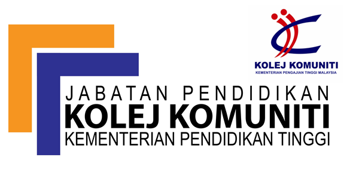

This page contains my educations.
| Logo | Description |
|---|---|
|
First of all for my education background its quite complicated ish. But its very simple. In my highschool years I spent my time at Sekolah Menengah Kebangsaan Mahsuri for 5 straight years and earning my Sijil Pelajaran Malaysia(SPM). After that tried for Form 6 program at same highschool. But just for a week I received the letter for enrollment into Community College, Langkawi Branch. Taking culinary arts program. For about a month I studied I received an email regarding Mengubah Destini Anak Bangsa(MDAB). After six months of hardship is bestow (unofficially) The Dean’s List for getting 3.90 CGPA. Furthermore, I entered Universiti Teknologi Mara Kedah Branch and currently taking Diploma in Information Management program. |
|
|  | |